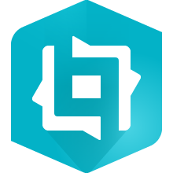

A showcase of passion projects, coding exercises, and design work.
Featured Projects
Custom Experience Builder WidgetsBuilding apps using ArcGIS Maps SDK is great, but sometimes it's best to
build applications with low-code utilities. This page showcases some apps, and links to custom widgets.
OngoingTypeScriptReactAzure DevOps (CI/CD)

Experience BuilderOpenA Better Esri Radar ViewerEsri doesn't really provide a radar solution out of the box. This
project seeks to provide an alternative method to be able to add radar to any Esri map based
product.CompleteReactJavascriptOpenAccessibility Through Responsive DesignA consistent goal, to improve accessibility, and create responsive
design that works on any device. Read about how I work to implement accessible design in my
own projects.OngoingOpenWorking With the Hover EffectWeb-Mapping is highly interactive! Allowing users to click on features
to get more information is a great way to reduce clutter. But what if you could get insights
without even making an input?CompleteReactJavascriptOpenTaking Control of Calcite DesignI am working on controlling the Calcite Design framework to make highly styled applications.
Using this framework makes it easy to work in accessibility, and ensure consistent design language.
This application uses a simple map viewer to show the usefulness of Calcite.
CompleteReactJavascriptOpen
 Azure DevOps (CI/CD)
Azure DevOps (CI/CD) Javascript
Javascript